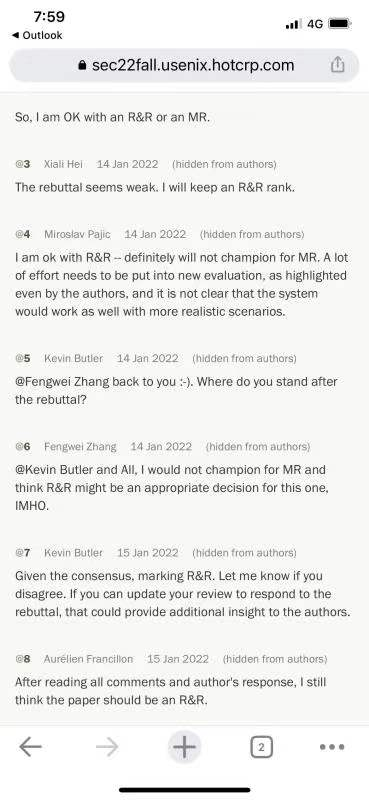
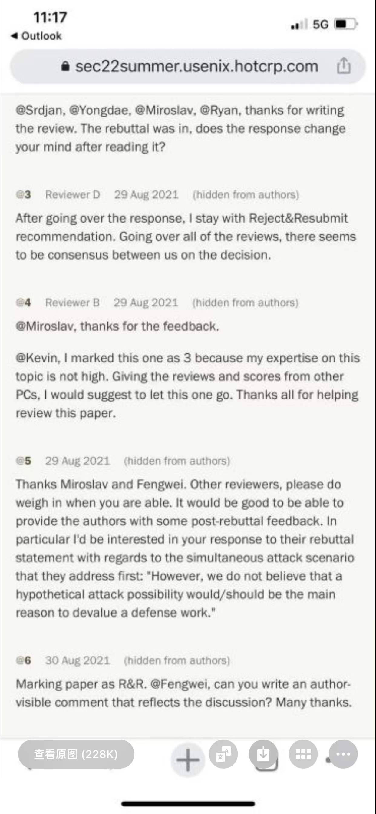
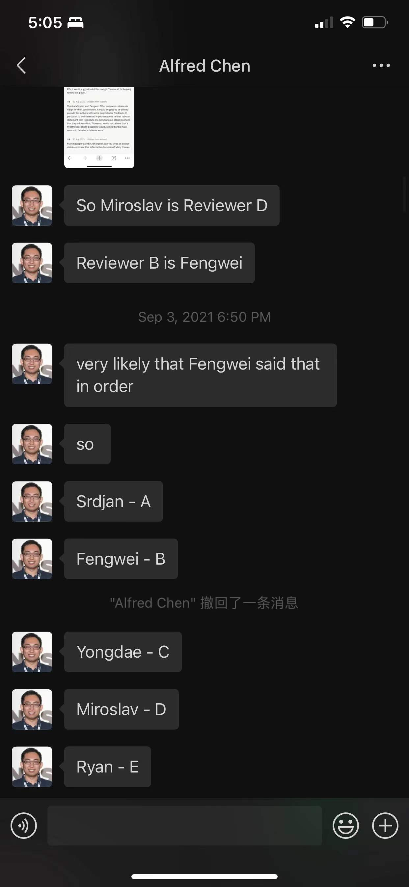
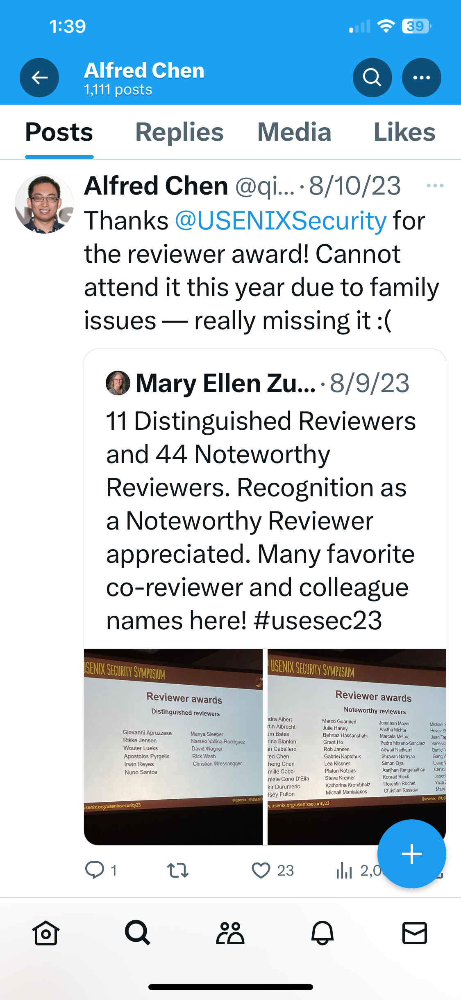
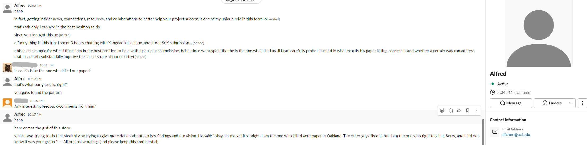
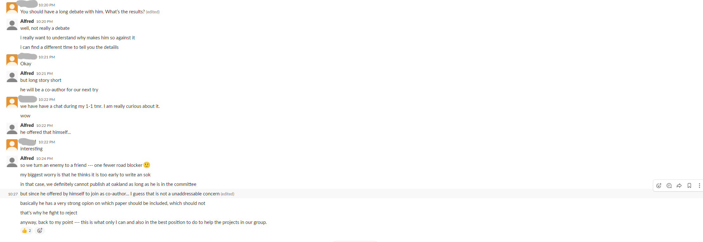

Disclaimer & Information Statement
This website collects historical materials related to academic and professional conduct within academic institutions. It contains redacted group communications and related documents, including Slack messages, emails, WeChat conversations, and lab policies. The purpose is to preserve these materials and provide context for readers reviewing them.
This website contains materials concerning events that occurred on or before 2023. The descriptions on this page are summaries based on materials and information available to the site author and are provided for context only. They do not describe any current situation.
Some materials were shared with the University of California, Irvine (UCI) and several academic conferences. According to communications received by the site author, UCI conducted a process under the UC Abusive Conduct Policy following a formal complaint. Because university processes are confidential, this site does not attempt to restate non-public findings or describe any non-public administrative action.
USENIX also reviewed concerns related to confidentiality in the peer review process. Based on communications available to the site author, USENIX considered the matter and responded regarding its processes, but this site does not characterize any conference communication beyond what is directly stated in the underlying documents.
The purpose of this website is to document historical materials and provide a record of related communications. The accompanying text is intended as descriptive context for those materials, not as a substitute for the materials themselves.
By continuing to browse this site, you acknowledge that the content is historical in nature and is presented for review of past materials only. If any description on this page is inaccurate, the site author welcomes relevant corrections or clarifying documents.
Selected Records & Communications
Materials Relating to Review and Submission Communications
These materials include an email with an attached submission PDF and screenshots of HotCRP and WeChat conversations. The attached PDF is included as an example of review-related material discussed in the accompanying records. The screenshots appear to discuss review writing, reviewer identities, and author-visible comments in the context of non-public conference review processes.
Email: Shared Related Submission


Additional Unpublished File Names Referenced in Related Records
The following file names are included because they were referenced in records available to the site author in connection with review-related materials. According to those records, files of this kind were circulated to students for review-related work. The list below identifies file names only; it does not reproduce the underlying documents. Due to the sensitive nature of these materials, they are not uploaded here.
Files Referenced for Venues Where Alfred Was Not on the Program Committee
According to records available to the site author, these file names were associated with materials shared with Alfred by another person:
- #271 - ACSAC 2019 (Redacted).pdf
- CCS 2020 - Paper 177.pdf
- CCS 2020 - Paper 200.pdf
Files Referenced for Venues Where Alfred Was on the Program Committee
According to records available to the site author, these review file names were associated with materials discussed in relation to Alfred's program-committee service. Related email and Slack records exist for materials in this category, but the site does not reproduce those records here:
- #113 - USENIX Security '22 Fall.pdf
- #168 - USENIX Security '22 Summer.pdf
- #216 - USENIX Security '22 Fall.pdf
- #299 - USENIX Security '22 Fall.pdf
- #305 - USENIX Security '21 Fall.pdf
- #311 - USENIX Security '21 Fall.pdf
- #329 - USENIX Security '21 Fall.pdf
- #337 - USENIX Security '22 Summer.pdf
- #352 - USENIX Security '21 Fall.pdf
- #484 - USENIX Security '22 Fall.pdf
- #62 - USENIX Security '21 Summer R1.pdf
- #62 - USENIX Security '21 Summer.pdf
- #81 - USENIX Security '21 Summer.pdf
Materials Relating to Student Review Contributions
These materials include an email exchange about student participation in paper review work and a public screenshot concerning a USENIX reviewer award. In the email, the student states that they wrote 62 reviews between February 2, 2021, and October 20, 2023 and asks for confirmation about assignment, acknowledgment, and use of those reviews. In response, Alfred confirms that the papers were assigned as internal research tasks as part of PhD training and states that there was no public or external acknowledgment for completing those tasks.
Email: Acknowledgement for Student ReviewsThe same exchange also states that Alfred declined to provide further detail on how he completed his own review assignments using those student-written reviews. Taken together, these materials are relevant to how student review contributions were described and acknowledged.

Policies and Group Guidelines (Old Versions: 2021-2022)
These documents outline lab policies and work expectations from prior years. Topics visible in the materials include expected working hours, working nights and weekends, office presence, response-time expectations for Slack and email, copying Alfred on group-related emails, sending external email drafts to him first, and the relationship between these expectations and future recommendation letters.
Group Info & Policy (2022-09-23)Email: Promote Working-in-the-Lab Atmosphere
Reimbursement Communication
This email thread concerns reimbursement for research-related purchases, including batteries and an HDMI cable, and discusses reimbursement through an Amazon gift card. The thread also includes a later exchange in which the student asks whether a $100 Amazon gift card was reimbursement, Alfred describes it as a cash reward for helping the submission, and the participants then clarify the terminology.
Email: Reimbursement Through Amazon Gift CardResearch Experiment Video
This video records a driving experiment labeled in the video itself as a comparison between "Benign driving with OpenPilot v0.7.4" and "DRP attack injection." The footage shows inside and outside views of a vehicle on a public road approaching and then colliding with roadside boxes, and includes side-by-side comparison frames labeled "Without attack" and "With attack." According to information available to the site author, the vehicle shown was the student's personal car.
Message About Certificate Delivery
This message thread concerns delivery of certificates to a visiting professor after Alfred says he has emailed the visitor and copied a student. The thread then discusses whether someone needs to drive, one student's concern about vehicle registration, and Alfred's suggestion of using Uber or Lyft.

Other Materials
These screenshots show additional group communications related to research submissions and interactions with an outside researcher. The messages suggest an effort to improve relations with an outside researcher whom Alfred believed had opposed an earlier submission, including discussion of making that person a co-author on a future submission.

